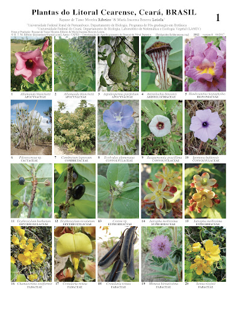
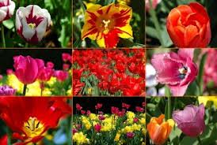
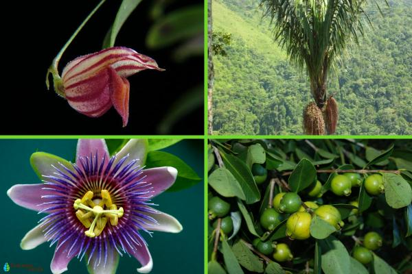
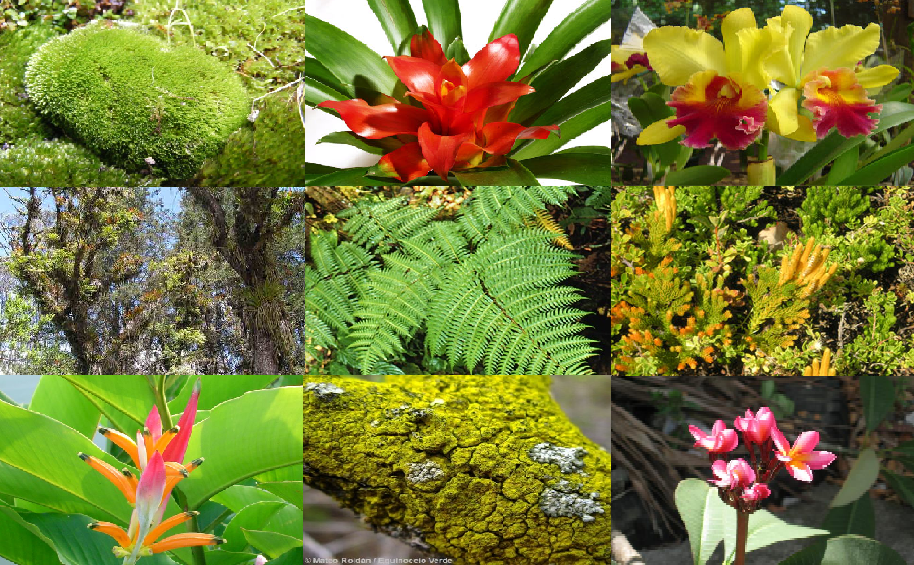

Costa
La Costa ecuatoriana, con su clima tropical, ofrece una rica biodiversidad, incluyendo manglares, bosques secos y playas.
Sierra
La Sierra, con sus majestuosas montañas y valles, alberga una gran variedad de especies de flora y fauna adaptadas a climas fríos.
Oriente
La Amazonía, uno de los ecosistemas más biodiversos del planeta, es hogar de miles de especies únicas y fascinantes.
Galápagos
Las Islas Galápagos, famosas por su ecosistema único, son el hogar de especies endémicas como las tortugas gigantes y los piqueros de patas azules.